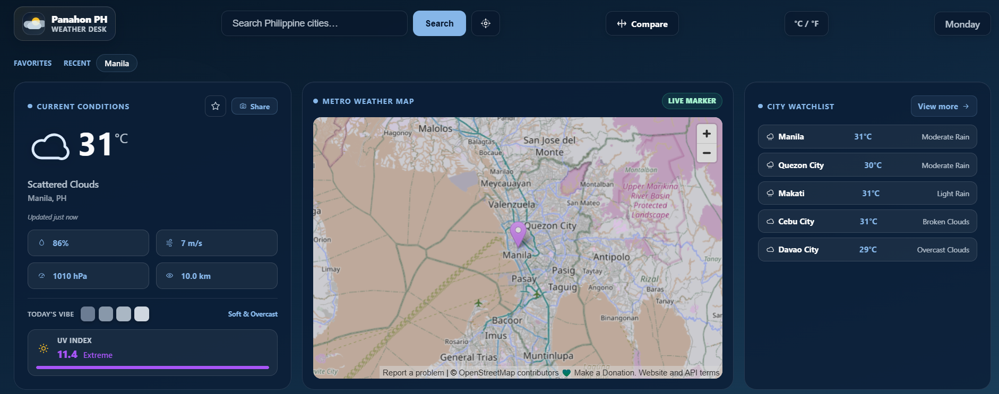

Panahon PH Weather Dashboard
A live weather interface for Philippine cities with search, unit switching, a city watchlist, and a map-first dashboard layout.
Problem
Make weather data easier to scan on desktop while keeping mobile city lookup fast.
Build
Connected API data, map context, saved locations, and responsive weather cards.
Polish
Dark weather-station styling, high-contrast states, and compact forecast hierarchy.
HTML
CSS
JavaScript
REST API
Responsive UI

Live project